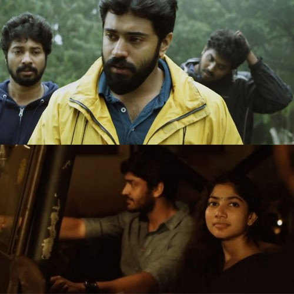
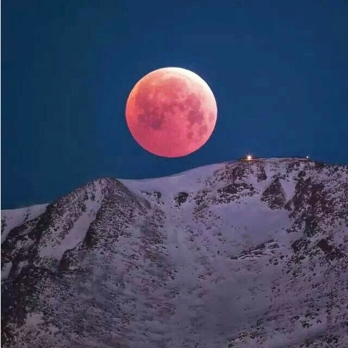

உந்தன் கவி பாடும் இதழின்
வழியே.....
திட்டுவதர்காகவாவது ஏன் பெயரை
உச்சரித்தல் போதும் அன்பே.....
வீசிடும் காற்றின் வழியே உன் ஒலி தேடி
ஓடுவேன்.....
ஓய்ந்த உன் ஒலியின் மொழியை உலகேங்கும்
தேடுவேன்......
-கேயன்
வழியே.....
திட்டுவதர்காகவாவது ஏன் பெயரை
உச்சரித்தல் போதும் அன்பே.....
வீசிடும் காற்றின் வழியே உன் ஒலி தேடி
ஓடுவேன்.....
ஓய்ந்த உன் ஒலியின் மொழியை உலகேங்கும்
தேடுவேன்......
-கேயன்
உந்தன் மடி ஓரம் தலை சாய்ந்து..
முகம் கண்டு..
நான் கவி பாடும் பொருட்டு...
நீ எந்தன் விழி பார்த்து...
தலை குனிந்து..
என் இதலோரம் கனி
சுவைத்து விடுவாயோ...
சொப்பன வாழ்விலே சுகம் காணும்
தேன்சுவையே....
-கேயன்
முகம் கண்டு..
நான் கவி பாடும் பொருட்டு...
நீ எந்தன் விழி பார்த்து...
தலை குனிந்து..
என் இதலோரம் கனி
சுவைத்து விடுவாயோ...
சொப்பன வாழ்விலே சுகம் காணும்
தேன்சுவையே....
-கேயன்
நீ கண் இமைக்கும் அழகினிலே
கவி ஆயிரம் படைப்பேனடி....
நீ புருவம் உயர்த்தும் பொழுதினிலே எம்மொழியை கொஞ்சம் குறைப்பேனடி....
ரோசம் வந்து போனாலும் பாசம் விட்டுப் போகாதடி....
என் சுவாசம் விட்டுப் போனாலும் உன் வாசம் என்று மறையாதடி....
கல் தரையிலும் மலர் பரிப்பேன். நீ சென்ற தடம் பார்த்து....
கல்லரையிலும் கண் விழிப்பேன் நீ வரும் செய்தி கேட்டு.....
- கேயன்
நீ புருவம் உயர்த்தும் பொழுதினிலே எம்மொழியை கொஞ்சம் குறைப்பேனடி....
ரோசம் வந்து போனாலும் பாசம் விட்டுப் போகாதடி....
என் சுவாசம் விட்டுப் போனாலும் உன் வாசம் என்று மறையாதடி....
கல் தரையிலும் மலர் பரிப்பேன். நீ சென்ற தடம் பார்த்து....
கல்லரையிலும் கண் விழிப்பேன் நீ வரும் செய்தி கேட்டு.....
- கேயன்
தண்ணீரில் கண்ட முகம் கை பட்டால்
களைந்து விடும்....
ஆனால்....
உன் முகம் கண்ட என் மனமோ கல் அடி
பட்டாலும் கலங்காதடி.....
-கேயன்
களைந்து விடும்....
ஆனால்....
உன் முகம் கண்ட என் மனமோ கல் அடி
பட்டாலும் கலங்காதடி.....
-கேயன்
நீ எந்தன் மடி சாய்ந்து கண்மூடும் வேலையிலே...
கதைகள் பல கதைபேனடி....
அதை நீ கண்டு கொல்லாமல்....
தூங்கும் அழகை கண்டு ரசிபேனடி.....
-கேயன்
தமிழகத்திற்கு தேவை
மது விலக்கு....
அதில் உன் விழிகள் மட்டும்
எனக்கு விதிவிலக்கு.....
-கேயன்
மது விலக்கு....
அதில் உன் விழிகள் மட்டும்
எனக்கு விதிவிலக்கு.....
-கேயன்

நீயே என் உலகம் என எண்ணி இருந்தேன்...
நியோ ஏசி விட்டாய்...
தூசியேன என் காதலை ஊதி விட்டாய்...
விழி நனைகிறேன்....
வாழவைக்க முடியாத என் காதலை எண்ணி அல்ல...
உன்னுடன் வாழ்ந்த என் காலங்களை எண்ணி.....
-கேயன்
காணாத விடியலை கண்டேன்
உன் விழிகளில்.... -கேயன்
உன் விழிகளில்.... -கேயன்

உன் கருங்கூந்தல் மையொடுத்து இரவுக்கு
வண்ணம் தீண்டினேன்...
அதில் பவுர்ணமி நிலவாய் உன்னை பூட்டினேன்.... -கேயன்
வண்ணம் தீண்டினேன்...
அதில் பவுர்ணமி நிலவாய் உன்னை பூட்டினேன்.... -கேயன்
இதயத்திடம் மல்லு கட்டினேன் துடிக்காதே
என்று....
இதயத்தில் உன்னை வைத்ததாலோ
என்னவோ....
துடிக்கும் பொழுது உமக்கு வலிக்கும்
என்றுறைத்து..... -கேயன்
என்று....
இதயத்தில் உன்னை வைத்ததாலோ
என்னவோ....
துடிக்கும் பொழுது உமக்கு வலிக்கும்
என்றுறைத்து..... -கேயன்